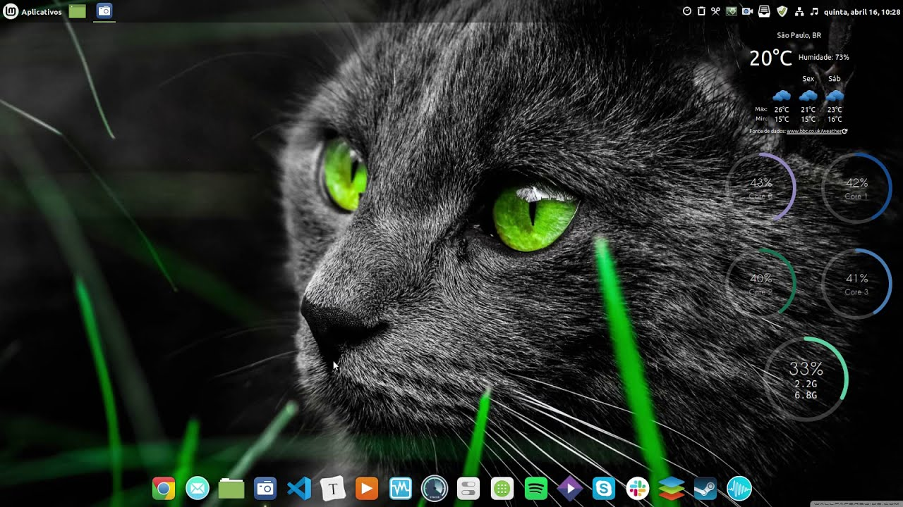

Sobre o Kitty Linux
O Kitty Linux é um sistema operacional feito para quem está começando no mundo da tecnologia e da programação. Simples, leve e amigável.
Interface
Bonito, personalizável e fácil de usar
O Kitty Linux foi pensado para deixar o Linux mais simples e agradável para todos. Personalize o sistema do seu jeito.

Feito para aprender
Criado para quem deseja dar os primeiros passos na programação e na tecnologia.

Vem integrado com as IDEs mais utilizadas atualmente!